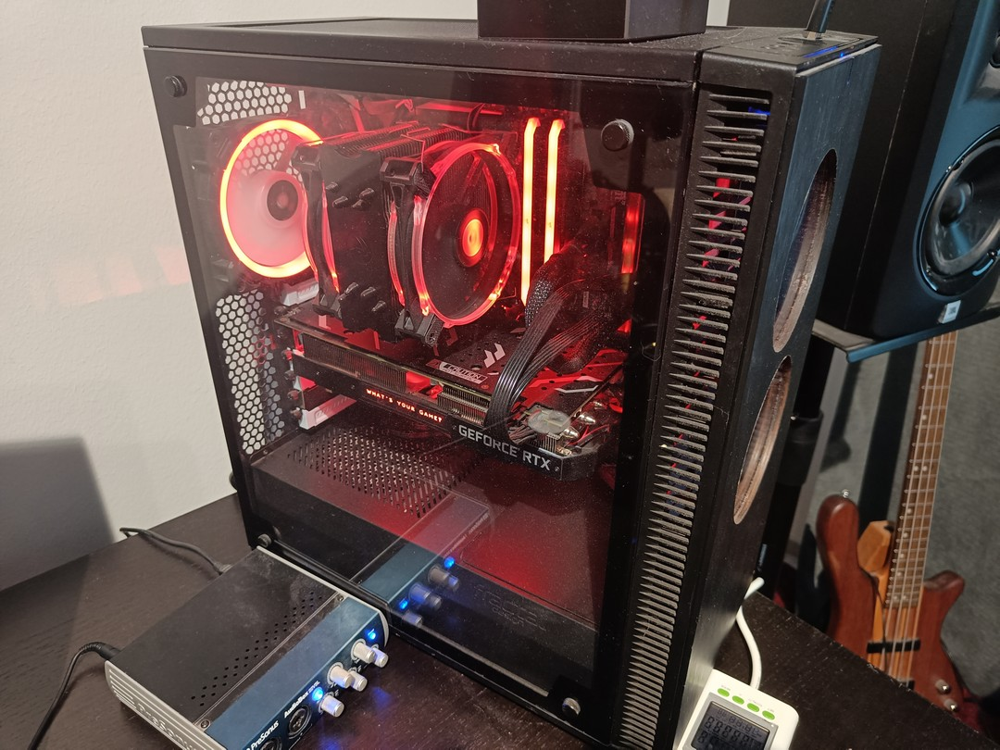

Olen Ville Saarinen, 38-vuotias mies Tuusulasta. Opiskelen tällä hetkellä Keudassa ohjelmistokehittäjäksi.
Olen työskennellyt rakennusalalla 17 vuotta, ja nyt ammatillisen kuntoutuksen kautta suuntautumassa
uudelle alalle. Perheeseeni kuuluu vaimo, lapsi, kaksi koiraa ja kissa.
Musiikki on suuri intohimoni. Minulla on kotistudio, jossa tuotan omaa musiikkiani.
Soitan muun muassa kitaraa, bassoa ja pianoa.
Luonnossa liikkuminen antaa hyvin vastapainoa nykyajan hektiseen elämänmenoon. Suomessa on mainiot puitteet vaeltamiseen ja varsinkin kansallispuistot ovat lähellä sydäntäni.
Koodaamisesta minulla ei ole juurikaan aikaisempaa kokemusta, mutta tietokoneet ja tietotekniikka yleisesti ovat aina olleet lähellä sydäntäni. Olen kasannut muun muassa omat tietokoneeni 14-vuotiaasta lähtien.
| Etunimi | Sukunimi | Katuosoite | Postinumero | Postit.paikka | Puh.numero | Sähköposti |
|---|---|---|---|---|---|---|
| Ville | Saarinen | Mariankatu 2 | 000170 | Helsinki | 0449876543 | ville.saarinen@edu.keuda.fi |
| Linus | Torvalds | Kooditie 9 | 01510 | Vantaa | 0473505433 | codingishard@gmail.com |
| Bill | Gates | Ikkunakatu 95 | 01300 | Vantaa | 0484309358 | windowsrules@yahoo.com |